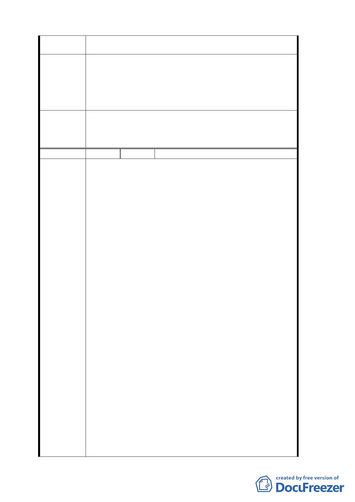

建議辦法
委員會決議
編號
陳情理由
化局進行實質審查後，卻發現有值得保存之老樹與歷史建物卻
尚未納入本案計畫之內。
1. 請 貴會國民黨籍委員利益迴避，退出此案之審議。
2. 請 貴會將本案在土地關係人確定前，退回台北市都市發展局，
待土地關係人確定後，再行送案審議。
3. 現有條件是否確信公平反映地主回饋地目變更之利得。
4. 請 貴會將本案退回台北市都市發展局，待市府相關單位就此一
部分納入整體都市計畫變更案後，再行送案審議。
1.有關土地權屬疑義之處理已超越本會審議權責，如有涉及過去歷
史背景因素而影響相關當事人之權益，應另循法律途徑解決。
2.另回饋內容與財務計畫，依市府補充資料及簡報資料等修正內容
通過。
8 陳情人 臺北市文山社區大學
陳情位置：
壹、中興山莊草籚
一、土地標示：
華興一小段建地 440 號東南側一隅、華興一小段雜地 315 號
二、門牌號碼
木柵路一段 290 號
貳、台北市永建國小(試院路 2 號)
陳情理由：
壹、中興山莊
1.中興山莊，原為國民黨革命實踐院所在地，創立於民國 38 年，
50 多年來作為國家培育人才的基地，民國 85 年改名國民黨國家
發展研究院。先總統 蔣公生前曾多次以國民黨黨主席的身分親
臨中興山莊，並與夫人蔣宋美齡女士住在別名「草籚」的行館內。
據山莊工作人員表示，行館建築年代大約在民國 55 年左右，行
館大門原本面對風景優美的萃湖，傳說曾有人看過蔣公與夫人在
萃湖划船。現在的行館，外觀經過整修，大門改至面對中興山莊
內部，原本與萃湖相望的優美風景已經被築起的高牆相隔在外，
從萃湖望去，行館顯得深不可測，發人好奇。
2.除了蔣公行館別具的歷史意義之外，環繞在行館圍牆四週的百年
老樹、張氏祠堂都與木柵地區的開發息息相闗。緊臨在中興山莊
南側的下崙路是先民至木柵開拓的道路，下崙路 16 號前的兩棵
百年老樹，原本在民國 84 年拓寬道路時要砍掉，幸而耆老張文
碧發起保護老樹，而得以保存，此舉開啟了台北市保護老樹運動
的先河，目前這兩棵老樹已經列入文山區受保護老樹名單。位在
下崙路 34 號的張氏祠堂建於民國 21 年，已有 70 多年的歷史，
建材木料是自大陸運來的福州杉，現已成立張慶望張秀卿祭祀公
業。
3.緊臨於行館的木柵公園，在二次大戰期間，曾被當作是戰俘放牧
之地。由於木柵公園一側地勢較高，當地人稱之為牛埔，二次大
戰期間，此地成為外國戰俘放牧之地，人們稱它為「凸鼻番仔
嶺」，臨木柵公園旁─木柵路一段 341 號的連棟建築，就是當時
的戰俘營，關的是英軍的高級軍官。現在的木柵公園則是花木扶
27